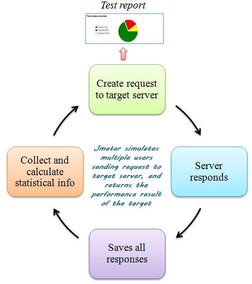

Инструменти за стрес-тестове на уеб приложения
Тестването на товар е вид нефункционално тестване и е под-множество на тестването на производителност. При този вид тестване се изчислява производителността на едно уеб приложение когато конкретен брой потребители го използват едновременно.
Целта на тестването на товар е да се осигури плавното функциониране на приложението при натовареност, отговаряща на тази в реалността. То помага за откриване на проблеми, засягащи:
- Време за отговор на заявка
- Производителността на системните компоненти при различни натоварености
- Производителността на компонентите на базата данни при различни натоварености
- Връзката между клиент и сървър
- Дизайна на софтуера
- Конфигурация на сървъра
- Ограниченията на хардуера [1]
Подобно на тестването на товар, стрес тестването също проверява поведението на уеб приложение при определен товар. Това, което ги разграничава е, че докато тестването на товар набляга върху производителността на една система, стрес тестването набляга върху нейната устойчивост и способност да обработва грешки.
Една от целите на стрес тестването е да осигури, че системата няма да се срине при непредвидени ситуации. Чрез огромен брой входни данни то определя границата на натовареността, при която ще се счупи системата.
Друга цел е на стрес тестването да осигури, че системата правилно се възстановява след като се премине границата на натовареност, т.е да се провери поведението на системата след като вече е настъпил срив.
Стрес тестването е нужно поради следните причини:
- То проверява до каква степен работи система при голяма натовареност
- То проверява дали правилно се представят съобщенията за грешки при голяма натовареност
- Срив на системата при критични ситуации ще доведе до значителни финансови загуби
- То подобрява като цяло колко подготвена е една система да справи с огромни натоварености [2]
Apache JMeter е инструмент за стрес тестване с отворен код, разработено изцяло на Java. То е създадено за тестване на натовареността на функционалностите и изчисляване на производителност. Приложението позволява тестване на производителността на както статични, така и динамични ресурси. Може да симулира натовареност върху обект, сървър, група от сървъри или мрежа. Така то изследва тяхната издържливост и ефективност при различни степени на натовареност. [3]
Тестване на товар чрез JMeter се извършва по следният начин:
- JMeter създава и изпраща заявка към сървъра като нормален уеб браузър
- JMeter получава отговор от сървъра
- Тези отговори се събират и визуализират под формата на диаграма
- JMeter обработва информацията, получена от сървъра
- JMeter генерира тестов резултат в различни формати (текст, XML, JSON)
- Тестерът анализира получения резултат [4]
Предимства и функционалности на JMeter:
- Отворен код JMeter е приложение с отворен код, което означава, че е напълно безплатен инструмент.
- Независим откъм платформата Поради факта, че JMeter е десктоп приложение.
- Лесна инсталация Нужно е единствено да се копира и изпълни .bat файла.
- Ефикасна симулация Чрез симулиране на различни потребители, които работят на паралелни нишки JMeter може да достигне желаната натовареност.
- Визуализация от резултати на тестването Резултатите от тест в JMeter може да представи по четири различни начина: като таблица, лог файл, дърво или диаграма.
- Поддръжка на протоколи JMeter поддържа всички базови протоколи: HTTP, SOAP, LDAP, JDBC, JMS, and FTP.
- Интеграция с библиотеки с отворен код JMeter е интегрирано с библиотеките Jenkins, Maven, and Gradle.
Недостатъци на JMeter:
- Висока консумация на памет JMeter симулациите изискват много памет за изпълнение и генериране на тестов отчет.
- Единствено за уеб приложения JMeter е добър инструмент за тестване на уеб приложения, но не е удобен за десктоп приложения.
- Не поддържа JavaScript JMeter е десктоп приложение, а не браузърно. Поради това то има трудности при обработката на информация от JavaScript и AJAX, което може да доведе то неточности при симулацията.
Locust е инструмент за стрес тестване с отворен код. Той е предназначен за тестване на уеб сайтове и изчисляване на колко потребителя системата може да поддържа паралелно. Идеята зад инструмента е всеки тест да симулира „рояк от скакалци“, които ще нападат тестваната система. Поведението на всеки „скакалец“ (тестов потребител) се определя от тестера и той може да наблюдава как се развива теста в реално време чрез потребителски интерфейс.
Locust е базиран на изпълнението на събития, което дава възможност да се поддържат потенциално хиляди конкурентни потребителя на една машина. За разлика от други приложения, които използват събития, Locust не използва callback функции. Вместо тях използва леки процеси, реализирани чрез gevent, библиотека на Python за доставяне на синхронизационни приложен програмен интерфейс на високо ниво. Всеки отделен „скакалец“ се изпълнява в собствен процес, което позволява силна гъвкавост при писането на тестове с Python без да се усложнява кода чрез прилагане на callback функции. [5]
Предимства и функционалности на Locust:
- Може да тества всяка система Инструментът е написан предимно за тестване на уеб приложения, но също позволява тестване и на други типове приложения.
- Писане на тестове на Python Тестовете изглеждат и се изпълняват като обикновен код, написан на Python. Това е благодарение на факта, че инструмента прилага coroutine функции, вместо callback.
- Инструментът е разпределен и скалируем Locust поддържа стрес тестове, разпределени на няколко машини. А всяка инстанция на Locust позволява хиляди виртуални потребители в един процес.
- Уеб-базиран потребителски интерфейс Интерфейсът на Locust е разработен с JavaScript и HTML. Той показва важна за тестера информация в реално време. И поради факта, че е базиран на уеб, той е лесно разширяем и може да се приложи в множество платформи.
- Лесно променлив код Всичките сложни операции на инструмента се поемат от библиотека gevent. Locust е създаден с идеята да е лесно променлив и има за цел да избегне чупливостта, от която страдат други подобни инструменти за стрес тестване.
Недостатъци на Locust:
- Загуба на статистики Инструмента събира и представя статистика докато определен брой потребители не е достигнат. След това статистиката се изтрива и се започва събирането от начало.
- Липсващи ресурси Инструментът няма да поиска URL адрес без изрично да се зададе да го търси
Gatling е инструмент за стрес-тестване, базиран на Scala. Предлага се версия с отворен код, Gatling, както и лицензирана версия, Gatling Frontline. Разработен е с идеята да е инструмент, който е лесен за използване, с лесна поддръжка и висока производителност.
Структурата на Gatling се разделя на четири компонента:
- Конфигурация на HTTP протокол Помага да се дефинира базовият URL , който ще се тества. Също така позволява да се дефинира тестовия потребител, заглавна част на езика и връзката.
- Дефиниция на заглавна част Изпълнява дефинирането на заглавната част на заявките, които се изпращат към сървъра.
- Дефиниция на тестов сценарий Уточнява какви действия ще извърши тестовият потребител, за да се симулира по-точно реално взаимодействие между клиент и сървър в приложението.
- Дефиниция на симулация Уточнява колко на брой тестови потребителя ще се изпълнят паралелно.
Предимства и функционалности на Gatling:
- Поддържа се от всяка операционна система и всеки браузър
- Не се нуждае от много памет, за да изпълни тестовите сценарии
- Тестовите сценарии могат да се изпълняват от различни тестови облаци
- Тестовите сценарии могат да се изпълняват чрез Jenkins, Gradle и Maven чрез съответните им плъгини
- Предлага графични отчети с полезна информация за анализ
Недостатъци на Gatling:
- Не позволява хоризонтална скалируемост
- Не позволява да се разпределя товара между различни машини
- Приложният програмен интерфейс се е променил коренно. Това би довело до проблеми на изпълнение на тестови сценарии, написани на стари версии. [3]
NeoLoad е инструмент за стрес тестване, написан на Java. Ефективен е при тестване както на уеб сайтове, така и на мобилни и десктоп приложения. Neotys, неговите създатели, предлагат безплатна и лицензира версия, но безплатната поддържа максимум 50 паралелни потребителя.
Предимства и функционалности на NeoLoad:
- Удобен графичен интерфейс, който улеснява процеса на писане на тестови сценарии
- Предлага опция за дефиниране на поведението на тестовия потребител, както и с колко на брой потребителя да се тестват
- Позволява следене на производителността на сървъра чрез монитори за употреба на процесора, паметта и т.н
- Обобщава резултата от тестовите сценарии под формата на диаграми и статистически таблици
- Записва HTTP натовареност между клиента и сървъра
- Поддържа трансформация на Selenium скриптове
Недостатъци на NeoLoad:
- Не се поддържа на Mac OSX
- Не може да достъпи DOM дървото на уеб страницата
- Липсва опция за запис на времето за отговор на заявка [3]
WebLOAD е инструмент за стрес тестване и анализи, произведено от RadView Software. Това е мощен инструмент за тестване на уеб и мобилни приложения. Неговите тестови сценарии се генерират на JavaScript и чрез опциите в средата за разработка те могат допълнително да се редактират. Инструмента се предлага като безплатна версия, която съдържа почти всички функционалностти, но ограничава максималния брой конкурентни потребители до 50, и като лицензиран продукт или облачна услуга.
Предимства и функционалности на WebLOAD:
- Потребителят може да симулира товар на машина или в облака
- Потребителят има възможност да сподели резултати от тестовете, когато е част разпределени екипи
- Помощен потребителски интерфейс, който автоматично търси начини да подобри тестовия скрипт
- Над 80 шаблона за отчет на резултат
- Автоматично маркиране на потенциални места на задръстване
- Лесна интеграция с други известни инструменти, например Selenium, Jenkins, Perfecto Mobile, New Relic, и Dynatrace
Недостатъци на WebLOAD:
- Не поддържа Citrix
- Не поддържа SAP GUI
- Нужни се известни технически знания, за да се използва инструмента [3]
Rational Performance Tester (RPT) е инструмент за тестване на производителност, разработен от IBM. Може да се използва за тестване на уеб приложения, както и сървърно-базирани приложения. Често се използва при подхода DevOps. Някои от целите му са да валидира скалируемостта на приложения, да разпознава силно натоварени участъци на система и да намали нуждата от стрес тестване.
Предимства и функционалности на Rational Performance Tester:
- Не изисква владеене на програмиране
- Поддържа широка база от приложения като HTTP, SAP, Siebel, SIP, TCP Socket и Citrix
- Докладване на срещнати проблеми при тестване в реално време
- Позволяване на диагностика на Websphere и Weblogic приложни сървъри
- Предлага поддръжка за множество среди и платформи
Недостатъци на Rational Performance Tester:
- Не поддържа приложения, базирани на Java Applet
- Не позволява динамично променяне на използваните ресурси [3]
Silk Performer е инструмент за стрес тестване, разработен от Micro Focus. Използва се за тестване на уеб, мобилни и Enterprise системи. Той помага при търсенето на слабости в приложението по време на пикова натовареност и позволява да се анализират резултатите чрез вградени опции за диагностика и отчети. Софтуерът е напълно платен.
Предимства и функционалности на Silk Performer:
- Поддържа всички основни уеб среди за разработка: HTML5, AJAX, Responsive Web Design, Adobe Flash/Flex, и Microsoft Silverlight
- Поддържа тестване на приложение върху множество мобилни платформи и стандарти за връзка: iOS, Android, BlackBerry, GPRS, HSPA+, EDGE и LTE
- Поддържа следните Enterprise приложения: Citrix, SAP, Oracle, MBC Remedy и Mainframe
- Позволява вградено следене на сървъра
- Създава информативни отчети чрез таблици и диаграми
- Безкрайна скалируемост на облака
Недостатъци на Silk Performer:
- Разработен е единствено за Windows
- Лоша интеграция с инструменти за дълбока диагностика за следене на производителност от типа „край към край“
- Стрес тестването консумира голямо количество памет
LoadRunner Cloud (познат също като StormRunner Load) е облачно-базиран инструмент за тестване на производителност, разработен от Hewlett Packard Enterprise. Той е напълно платен софтуер и се предлага като услуга. Той е подходящ за уеб и мобилни системи, които прилагат DevOps, гъвкави методологии и модела на водопада. [6]
Предимства и функционалности на LoadRunner Cloud:
- Лесен за употреба
- Поддържа HTTP/HTML, SAP Web, Java, Flex, TruClient Web, TruClient Native Mobile и TruClient Mobile Web протоколи
- Тясна интеграция с Jenkins, Dynatrace, Gatling, Docker, AWS Code Pipeline и New Relic
- Може да се генерира натовареност от различни географски точки
- Висока скалируемост, като позволява да се създават тестови сценарии с повече от един милион уеб или мобилнипотребители
- Виртуалните потребители могат да бъдат добавяни или премахвани по време на изпълнението на тестов сценарий
- Бързо откриване на проблеми с тестовите сценарии
- Добре персонализирани аналитични отчети, създадени чрез мрежова виртуализация
Недостатъци на LoadRunner Cloud:
- Не поддържа FTP
- Няма опция за мрежов анализ чрез Jmeter скрипт
- Няма опция за създаване на график за тестване
- Позволява да се прикачват единствено скриптове [3]
WAPT е платен софтуер тестване на производителност, предназначен за екипи от уеб разработчици и QA специалисти. Инструментът цели да комбинира леснота за употреба, ефективност и гъвкавост. Приложим е при тестване на уеб сайтове, мобилни приложения, ERP и CRM системи, IOT платформи и мрежови API услуги. Инструментът се предлага по три начина:
- WAPT - Базова версия с годишен лиценз, която допуска тестване с до 2000 паралелни потребителя [7]
- WAPT Pro - Разширена версия с годишен лиценз, която има допълнителни функционалности и допуска тестване с до един милион паралелни потребителя [8]
- WAPT Cloud - Облачна услуга, която се заплаща на час в зависимост от размера на провежданите тестове [9]
Предимства и функционалности на WAPT:
- Лесен за инсталиране, а при използване на облачната услуга дори няма нужда да се инсталира
- Поддържа също и RIA технологии
- Позволява тестване на сигурността на уеб сайтове
- Бързо проектиране и записване на тестови сценарии
- Позволява да се включва изпълнение на JavaScript код в поведението на виртуалните потребители
- Позволява разглеждане на добре-илюстрирани и подробни отчети дори по време на изпълнение на тестови сценарии
- Добре развито докладване на грешки спрямо различни фактори
Недостатъци на WAPT:
- Може да се инсталира единствено на Windows OS
- Няма опция за писане на скриптове [3]
- [1] Guru99 Tech Pvt Ltd, "Load Testing Tutorial: What is? How to? (with Examples)", [ https://www.guru99.com/load-testing-tutorial.html ], последно посетен на 2020-04-08
- [2] Guru99 Tech Pvt Ltd, "What is STRESS Testing in Software Testing? Tools, Types, Examples", [ https://www.guru99.com/stress-testing-tutorial.html ], последно посетен на 2020-04-08
- [3] Яна Густи, “TOP 20 tools for load testing in 2018”, публикувано на 2017-05-08, [ https://geteasyqa.com/blog/best-tools-load-testing/ ], последно посетен на 2020-04-08
- [4] ElysiumAcademy Private Limited, “What is JMeter? Why use JMeter? Advantages and disadvantages”, публикувано на 2017-06-03, [ https://www.linkedin.com/pulse/what-jmeter-why-use-advantages-disadvantages-private-limited ], последно посетен на 2020-04-08
- [5] Джонатан Хейман и други, “Locust Documentation, Getting started, What is Locust?”, , [ https://docs.locust.io/en/latest/what-is-locust.html ], последно посетен на 2020-04-08
- [6] Calleo Consultants Ltd, “StormRunner Load (also known as LoadRunner Cloud)”, [ https://www.calleosoftware.co.uk/products/performance-testing/stormrunner-load ], последно посетен на 2020-04-08
- [7] SoftLogica, “WAPT 10: Performance testing tool for web and mobile applications”, [ https://www.loadtestingtool.com/product.shtml ], последно посетен на 2020-04-08
- [8] SoftLogica, “WAPT Pro 5: Scalable performance testing solution”, [ https://www.loadtestingtool.com/pro.shtml ], последно посетен на 2020-04-08
- [9] SoftLogica, “WAPT Cloud: On-demand performance testing solution in the cloud”, [ https://www.loadtestingtool.com/cloud-testing.shtml ], последно посетен на 2020-04-08